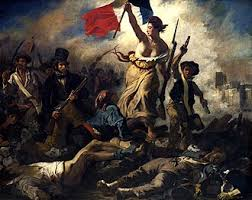

Önemli İdeolojiler

Milliyetçilik
Ulus-devletlerin doğuşu.

Liberalizm
Bireysel özgürlükler.

Sosyalizm
Eşitlik ve sınıfsız toplum.
Devrimler, ideolojiler ve modern dünyanın doğuşu
Egemenlik anlayışı kökten değişti.
İmparatorluklar sona erdi.
Küresel dengeler yeniden kuruldu.

Ulus-devletlerin doğuşu.
Bireysel özgürlükler.
Eşitlik ve sınıfsız toplum.
Modern demokrasinin temeli.
Türkiye’nin bağımsızlığı.
Küresel barış girişimi.
Dünya Savaşı
Yeni Ulus Devlet
Başlangıç Yılı